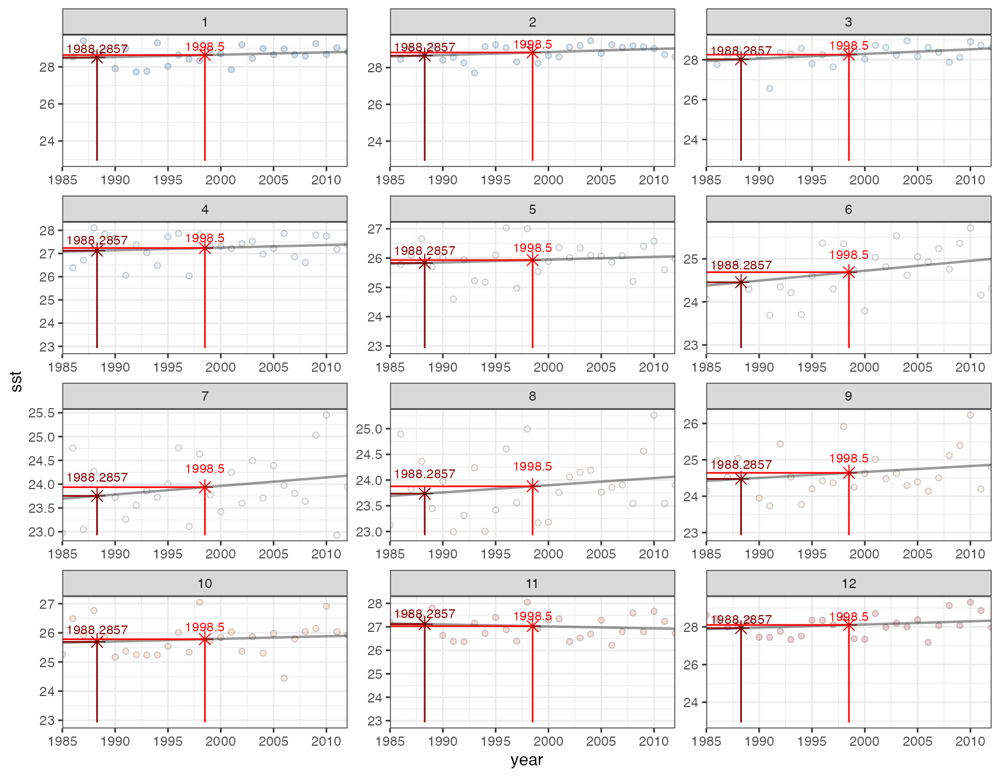

Validating DHW climatologies
validating_climatologies.RmdValidate climatologies
The dhw package was created to track reproducibility in
code while applying the CRW algorithms to additional datasets and
further analysis.
To validate the climatology and maximum monthly mean take a spatial subset of the NOAA CoralTemp and the NOAA Daily climatology files for a single pixel (Lizard Island) spanning 1:
library(dhw)
library(terra)
lizard_OISST_raster <- system.file("extdata", "lizard_crw.tif", package = "dhw", mustWork = TRUE) |> rast()
plot_mm(input = lizard_OISST_raster, lon = 145.425, lat = -14.675)
Verify Degree Heating Weeks
The dhw package was created to track reproducibility in
code while applying the CRW algorithms to additional datasets.
To validate the create_climatology() functions, take a
spatial subset of the NOAA CoralTemp and the NOAA Daily climatology
files for a single pixel (Lizard Island) spanning 1:
(NOAA Climatology available here: ct5km_climatology_v3.1.nc - Contains 12 monthly mean SST climatologies for deriving CRW’s daily global 5km SST Anomaly product. The maximum pixel-based values from among the 12 monthly mean SST climatologies form the Maximum Monthly Mean (MMM) SST climatology, which is then used to derive CRW’s daily global 5km coral bleaching heat stress products)
From the CoralTemp data, run create_climatology() to
generate SST, Daily Climatologies, MM, MMM, SSTA, HS, DHW:
library(sf)
library(terra)
library(tidyverse)
library(dhw)
library(ggplot2)
### set sf point -> polygon
grid_point <- data.frame( lon = 145.425, lat = -14.675) |>
st_as_sf(coords = c("lon", "lat"), crs = 4326) |>
vect() |>
buffer(width = 0.001)
# load raster
lizard_crw_raster <- system.file("extdata", "lizard_crw.tif", package = "dhw", mustWork = TRUE) |> rast() |> project("EPSG:4283")
### CoralTempDailyClimatology: "https://www.star.nesdis.noaa.gov/pub/sod/mecb/crw/data/5km/v3.1_op/climatology/ct5km_climatology_v3.1.nc"
lizard_crw_climatology_raster <- system.file("extdata", "lizard_crw_climatology.tif", package = "dhw", mustWork = TRUE) |> rast() |> project("EPSG:4326")
# extract Monthly Mean Climatology
test_SST <- create_climatology(lizard_crw_raster)
#> --- create_climatology ---
#> 3.8e-06 secs - Processing Monthly Mean Climatology
#> 0.27 secs - Processing Daily Climatology
#> 0.45 secs - Processing SST Anomalies
#> 0.58 secs - Processing HotSpots (HS)
#> 0.76 secs - Processing Degree Heating Weeks (DHW)
#> 1.1 secs - Combining outputs
#> 1.1 secs - Writing files
test_SST_vals <- terra::values(test_SST$mm) |> as.numeric() |> round(2)
# check CRW Monthly Mean Climatology
CoralTempDailyClimatology_vals <- terra::values(lizard_crw_climatology_raster) |> as.numeric()Comparing the two datasets, June - December mostly match, but MM
derived from the create_climatology() for Jan-May are
(slightly) inconsistent with the NOAA baseline:
data.frame(month=month.abb,
dhw_library_mm = test_SST_vals,
NOAA_mmm = CoralTempDailyClimatology_vals) |>
ggplot() + theme_bw() +
stat_smooth(aes(NOAA_mmm, dhw_library_mm), method=lm, alpha=0.5) +
geom_point(aes(NOAA_mmm, dhw_library_mm, fill=month), stroke=0.5, shape=21, size=3.5, alpha=0.4) +
ggrepel::geom_text_repel(aes(NOAA_mmm, dhw_library_mm, label=month), size=3.5, alpha=0.4) +
coord_fixed()As far as I’m aware the minor differences in mmm between
the crw climatology and that calculated by the
dhw package in the early months in the timeseries are due
to the NOAA calculation of the Daily Climatologies, which are based on
the full SST Timeseries (1985-01-01 to 2012-12-31), while CoralTemp is
only available 1985-06-01 to 2012-12-31:
data.frame(month.num = 1:12,
month = month.abb,
dhw_library_mm = test_SST_vals,
NOAA_mmm = CoralTempDailyClimatology_vals) %>%
mutate(difference = dhw_library_mm - NOAA_mmm) %>%
ggplot() + theme_bw() +
geom_col((aes(x = month.num, y = difference, fill = month)), show.legend=FALSE, alpha = 0.4, color="black") +
scale_x_continuous(breaks = 1:12, labels = month.abb) +
scale_fill_viridis_d() + ylim(-0.2, 0.2) +
ylab("degrees") + xlab("month")
To test this, we can substitute the CoralTempDailyClimatology back into
the climatology calculations. First download the complete NOAA dataset
for a subset of time (2015-2017) for all variables (sst,
ssta, hs, dhw):
library(rerddap)
NOAA_CRW_a <- griddap(
datasetx = 'NOAA_DHW',
time = c("2015-01-01", "2018-01-01"),
latitude = c(-14.655, -14.655),
longitude = c(145.405, 145.405),
#fields = c('CRW_SST', 'CRW_SSTANOMALY', 'CRW_HOTSPOT', 'CRW_DHW'),
fmt = "csv"
)
NOAA_CRW_b <- griddap(
datasetx = 'NOAA_DHW',
time = c("2018-01-01", "2021-01-01"),
latitude = c(-14.655, -14.655),
longitude = c(145.405, 145.405),
#fields = c('CRW_SST', 'CRW_SSTANOMALY', 'CRW_HOTSPOT', 'CRW_DHW'),
fmt = "csv"
)
NOAA_CRW_c <- griddap(
datasetx = 'NOAA_DHW',
time = c("2021-01-01", "2024-05-15"),
latitude = c(-14.655, -14.655),
longitude = c(145.405, 145.405),
#fields = c('CRW_SST', 'CRW_SSTANOMALY', 'CRW_HOTSPOT', 'CRW_DHW'),
fmt = "csv"
)
NOAA_CRW <- rbind(NOAA_CRW_a, NOAA_CRW_b, NOAA_CRW_c)
#usethis::use_data(NOAA_CRW, overwrite=TRUE)To compare this subset, run the individual components of the
create_climatology() except replace the
calculated_mm with the NOAA CRW
CoralTempDailyClimatology amd visualise the data:
lizard_crw_raster <- system.file("extdata", "lizard_crw.tif", package = "dhw", mustWork = TRUE) |> rast() |> project("EPSG:4283")
lizard_crw_climatology_raster <- system.file("extdata", "lizard_crw_climatology.tif", package = "dhw", mustWork = TRUE) |> rast() |> project("EPSG:4326")
load(system.file("extdata", "NOAA_CRW_data.rda", package = "dhw", mustWork = TRUE))
calculated_mm <- calculate_monthly_mean(lizard_crw_raster)
calculated_mmm <- calculate_maximum_monthly_mean(mm = lizard_crw_climatology_raster)
calculated_dc <- calculate_daily_climatology(sst_file = lizard_crw_raster, mm = lizard_crw_climatology_raster)
calculated_anomalies <- calculate_anomalies(sst_file = lizard_crw_raster, climatology = calculated_dc)
#> Warning: [-] CRS do not match
calculated_hotspots <- calculate_hotspots(mmm = calculated_mmm, sst_file = lizard_crw_raster)
#> Warning: [-] CRS do not match
calculated_dhw <- calculate_dhw(hs = calculated_hotspots)
calculated_baa <- calculate_baa(hs = calculated_hotspots, dhw = calculated_dhw)
# convert to df
calculated_sst_df <- lizard_crw_raster |> as.data.frame(xy=TRUE, wide=FALSE, time=TRUE) |> mutate(time = as.Date(time)) |>
rename(calculated_SST = values) |> dplyr::filter(time >= as.Date("2015-01-01")) |> dplyr::filter(time < as.Date("2024-05-15")) |> select(-x, -y, -layer)
calculated_dc_df <- calculated_dc |> as.data.frame(xy=TRUE, wide=FALSE, time=TRUE) |> mutate(time = as.Date(time)) |>
rename(calculated_DC = values) |> dplyr::filter(time >= as.Date("2015-01-01")) |> dplyr::filter(time < as.Date("2024-05-15")) |> select(-x, -y, -layer)
calculated_anomalies_df <- calculated_anomalies |> as.data.frame(xy=TRUE, wide=FALSE, time=TRUE) |> mutate(time = as.Date(time)) |>
rename(calculated_SSTA = values) |> dplyr::filter(time >= as.Date("2015-01-01")) |> dplyr::filter(time < as.Date("2024-05-15")) |> select(-x, -y, -layer)
calculated_hotspots_df <- calculated_hotspots |> as.data.frame(xy=TRUE, wide=FALSE, time=TRUE) |> mutate(time = as.Date(time)) |>
rename(calculated_HS = values) |> dplyr::filter(time >= as.Date("2015-01-01")) |> dplyr::filter(time < as.Date("2024-05-15")) |> select(-x, -y, -layer)
calculated_dhw_df <- calculated_dhw |> as.data.frame(xy=TRUE, wide=FALSE, time=TRUE) |> mutate(time = as.Date(time)) |>
rename(calculated_DHW = values) |> dplyr::filter(time >= as.Date("2015-01-01")) |> dplyr::filter(time < as.Date("2024-05-15")) |> select(-x, -y, -layer)
calculated_baa_df <- calculated_baa |> as.data.frame(xy=TRUE, wide=FALSE, time=TRUE) |> mutate(time = as.Date(time)) |>
rename(calculated_BAA = values) |> dplyr::filter(time >= as.Date("2015-01-01")) |> dplyr::filter(time < as.Date("2024-05-15")) |> select(-x, -y, -layer)
daily_climatology_plot <- ggplot() + theme_bw() +
geom_line(data = calculated_sst_df, aes(time,calculated_SST), color="grey") +
geom_line(data = calculated_dc_df, aes(time, calculated_DC), color="blue") +
geom_hline(yintercept=terra::values(calculated_mmm) |> as.numeric(), color="red") +
ylab("SST")
library(patchwork)
#>
#> Attaching package: 'patchwork'
#> The following object is masked from 'package:terra':
#>
#> area
daily_anomalies_plot <- ggplot() + theme_bw() +
geom_line(data=calculated_anomalies_df, aes(time, calculated_SSTA, color=calculated_SSTA), show.legend=FALSE) +
scale_color_distiller(palette="RdBu") +
geom_hline(yintercept=0, color="black") +
ylab("SST Anomalies")
daily_hs_plot <- ggplot() + theme_bw() +
geom_line(data = calculated_hotspots_df, aes(time, calculated_HS, color=calculated_HS), show.legend=FALSE) +
scale_color_distiller(palette="Reds", direction=1) +
ylab("Hotspots")
daily_dhw_plot <- ggplot() + theme_bw() +
geom_line(data=calculated_dhw_df, aes(time, calculated_DHW, color=calculated_DHW), linewidth=1.5, show.legend=FALSE) +
scale_color_distiller(palette="RdYlGn", direction=-1) +
ylab("Degree Heating Weeks")
daily_baa_plot <- ggplot() + theme_bw() +
geom_line(data=calculated_baa_df, aes(time, calculated_BAA, color=calculated_BAA), show.legend=FALSE) +
scale_color_distiller(palette="RdPu", direction=1) +
ylab("Bleaching Alert Area")
(daily_climatology_plot / daily_anomalies_plot / daily_hs_plot / daily_dhw_plot / daily_baa_plot)
Third, compare the calculated climatology values for sst,
ssta, hs, dhw with the original
downloaded NOAA .nc file to validate the method:
NOAA_data <- NOAA_CRW_data |> dplyr::select(time, CRW_SST, CRW_SSTANOMALY, CRW_HOTSPOT, CRW_DHW, CRW_BAA) |>
mutate(time=as.Date(time)) |>
rename(NOAA_SST = CRW_SST,
NOAA_SSTA = CRW_SSTANOMALY,
NOAA_HS = CRW_HOTSPOT,
NOAA_DHW = CRW_DHW,
NOAA_BAA = CRW_BAA) |>
mutate(NOAA_HS = ifelse(NOAA_HS < 1, 0, NOAA_HS)) #|>
#mutate(NOAA_DHW = ifelse(NOAA_DHW == 0, NA, NOAA_DHW))
# DHW
calculated_data <-
left_join(calculated_sst_df, calculated_anomalies_df, by = join_by(time)) %>%
left_join(., calculated_hotspots_df, by = join_by(time)) %>%
left_join(., calculated_dhw_df, by = join_by(time)) %>%
left_join(., calculated_baa_df, by = join_by(time)) |>
dplyr::filter(time %in% NOAA_data$time) |>
select(time, calculated_SST, calculated_SSTA, calculated_HS, calculated_DHW, calculated_BAA)
combined_data <- left_join(calculated_data, NOAA_data, by = join_by(time))
mm_comparison <- data.frame(month=month.abb,
calculated_MM = terra::values(calculated_mm) |> as.numeric() |> round(2),
NOAA_MM = terra::values(lizard_crw_climatology_raster) |> as.numeric())
calibrated_plot_SST <- ggplot() + theme_bw() +
geom_point(data=combined_data, aes(NOAA_SST, calculated_SST), color="indianred1") +
geom_abline()
calibrated_plot_SSTA <- ggplot() + theme_bw() +
geom_point(data=combined_data, aes(NOAA_SSTA, calculated_SSTA), color="khaki3") +
geom_abline()
calibrated_plot_HS <- ggplot() + theme_bw() +
geom_point(data=combined_data, aes(NOAA_HS, calculated_HS), color="turquoise") +
geom_abline()
calibrated_plot_DHW <- ggplot() + theme_bw() +
geom_point(data=combined_data, aes(NOAA_DHW, calculated_DHW), color="lightseagreen") +
geom_abline()
calibrated_plot_BAA <- ggplot() + theme_bw() +
geom_point(data=combined_data, aes(NOAA_BAA, calculated_BAA), color="purple") +
geom_abline()
(calibrated_plot_SST + calibrated_plot_SSTA + calibrated_plot_HS + calibrated_plot_DHW + calibrated_plot_BAA) + plot_layout(nrow=2)Working apart from the BAA level 1 difference. TBC.